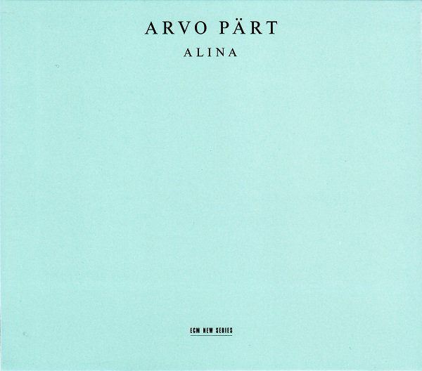

Alina by Arvo Pärt
“I could compare my music to white light which contains all colours. Only a prism can divide the colours and make them appear; this prism could be the spirit of the listener.”
Alina

- Spiegel im Spiegel, 10:36 Vladimir Spivakov, violin Sergej Bezrodny, piano
- Für Alina, 10:47 Alexander Malter, piano
- Spiegel im Spiegel, 9:12 Dietmar Schwalke, violoncello Alexander Malter, piano
- Für Alina, 10:53 Alexander Malter, piano
- Spiegel im Spiegel, 9:48 Vladimir Spivakov, violin Sergej Bezrodny, piano